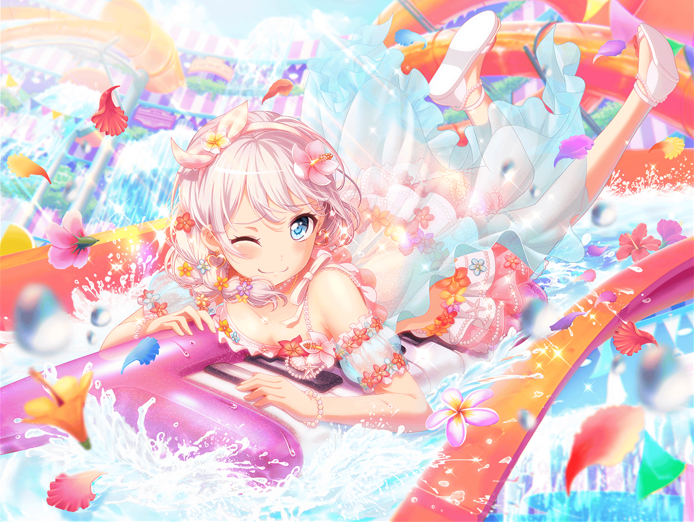

住宅地
イヴ
あ、{{userName}}さん！
こんばんは！
イヴ
{{userName}}さんも、今から帰るところですか？
イヴ
はい！
私も雑誌の撮影が終わって、帰るところなんです！
イヴ
よかったら、一緒に帰りましょう！

川沿いの道
イヴ
夕方になったのに、まだまだ暑いですね！
日本の夏の暑さには、いつまで経っても慣れる気がしません……
イヴ
あ、でも、だから夏は海に行って涼むんですよね。
なるほど、納得です！
イヴ
はい！ 私も海に行きましたよ！
アリサさん達と行ったんです！
イヴ
みなさん、私の日程に合わせてくださって、
とてもうれしかったです！
イヴ
海では泳いだり、ビーチバレーをしたり
いろいろなことをして遊びました！
イヴ
けど１番記憶に残っていることは……
そうですね、やっぱりスイカ割りです！
イヴ
海でスイカ割り大会があったので、
そこに私達も参加したんですよ！
イヴ
アリサさんの一太刀、お見事でした……
イヴ
はい！
見事な太刀筋でした！
イヴ
私は、タエさんや、ハグミさん、ココロさんと一緒に
アリサさんを誘導したんです！
イヴ
はい、みんなで練習したとき、
アリサさんが１番上手だったんです！
なので本番でスイカを割る役をお願いしたんです！
イヴ
ですが、アリサさんは運動があまり得意ではないのを
私、すっかり失念していて……
イヴ
アリサさんの負担になっていないか、
心配していたのですが、最後には
楽しかった、と言ってくれました！
イヴ
やっぱり遊びに行った全員が、
楽しむのが１番ですからね！
イヴ
……あ、そうだ！
次は{{userName}}さん、一緒にどうですか！？
イヴ
もっと他の人も誘って、みんなで行けば
もっともっと楽しくなると思うんです！
イヴ
……あれ？
わあ、もうこんなところまで
歩いていたんですね！
イヴ
お話に夢中ですっかり気づきませんでした！
イヴ
いろいろ聞いてくださって、
ありがとうございました！
イヴ
今度CiRCLEにもおみやげを
持っていきますね！